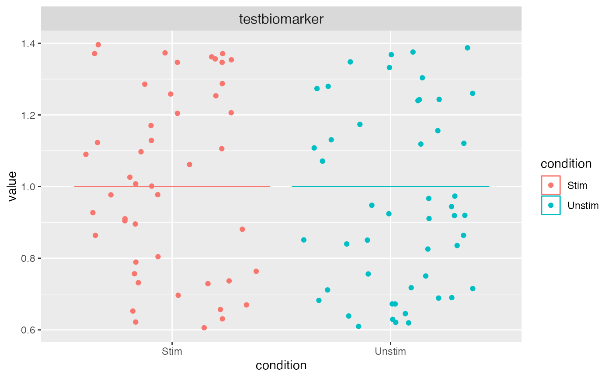

Run GSVA analysis on a SCtkExperiment object.
gsvaSCE(inSCE, useAssay = "logcounts", pathwaySource, pathwayNames, ...)
gsvaPlot(
inSCE,
gsvaData,
plotType,
condition = NULL,
show_column_names = TRUE,
show_row_names = TRUE,
text_size = 12
)Input SCtkExperiment object. Required
Indicate which assay to use. The default is "logcounts"
The pathway source if "Manual Input", the pathwayNames should be rowData annotations that are (0,1) vectors. If, "MSigDB c2 (Human, Entrez ID only)", the pathwayNames should be pathways from MSigDB c2 or "ALL" to run on all available pathways.
List of pathway names to run, depending on pathwaySource parameter.
Parameters to pass to gsva()
GSVA data to plot. Required.
The type of plot to use, "Violin" or "Heatmap". Required.
The condition(s) to use for the Violin plot, or the condition(s) to add as color bars above the Heatmap. Required for Violin, optional for Heatmap.
Display the column labels on the heatmap. The default is TRUE
Display the row labels on the heatmap. The default is TRUE.
Text size for plots. The default is 12
gsvaSCE(): A data.frame of pathway activity scores from GSVA. gsvaPlot(): The requested plot of the GSVA results.
gsvaPlot: Plot GSVA results.
Plot GSVA Results
utils::data(maits, package = "MAST")
utils::data(c2BroadSets, package = "GSVAdata")
maitslogtpm <- t(maits$expressionmat)
genesToSubset <- rownames(maitslogtpm)[which(rownames(maitslogtpm) %in%
GSEABase::geneIds(c2BroadSets[["KEGG_PROTEASOME"]]))]
maitslogtpm <- maitslogtpm[rownames(maitslogtpm) %in% genesToSubset, ]
maitsfeatures <- maits$fdat[rownames(maits$fdat) %in% genesToSubset, ]
maitsSCE <- createSCE(assayFile = maitslogtpm, annotFile = maits$cdat,
featureFile = maitsfeatures, assayName = "logtpm",
inputDataFrames = TRUE, createLogCounts = FALSE)
rowData(maitsSCE)$testbiomarker <- rep(1, nrow(maitsSCE))
res <- gsvaSCE(inSCE = maitsSCE, useAssay = "logtpm",
pathwaySource = "Manual Input", pathwayNames = "testbiomarker",
parallel.sz = 1)
#> Estimating GSVA scores for 1 gene sets.
#> Estimating ECDFs with Gaussian kernels
#>
|
| | 0%
|
|======================================================================| 100%
#>
#Create a small example to run
utils::data(maits, package = "MAST")
utils::data(c2BroadSets, package = "GSVAdata")
maitslogtpm <- t(maits$expressionmat)
genesToSubset <- rownames(maitslogtpm)[which(rownames(maitslogtpm) %in%
GSEABase::geneIds(c2BroadSets[["KEGG_PROTEASOME"]]))]
maitslogtpm <- maitslogtpm[rownames(maitslogtpm) %in% genesToSubset, ]
maitsfeatures <- maits$fdat[rownames(maits$fdat) %in% genesToSubset, ]
maitsSCE <- createSCE(assayFile = maitslogtpm, annotFile = maits$cdat,
featureFile = maitsfeatures, assayName = "logtpm",
inputDataFrames = TRUE, createLogCounts = FALSE)
rowData(maitsSCE)$testbiomarker <- rep(1, nrow(maitsSCE))
res <- gsvaSCE(inSCE = maitsSCE, useAssay = "logtpm",
pathwaySource = "Manual Input", pathwayNames = "testbiomarker",
parallel.sz = 1)
#> Estimating GSVA scores for 1 gene sets.
#> Estimating ECDFs with Gaussian kernels
#>
|
| | 0%
|
|======================================================================| 100%
#>
gsvaPlot(inSCE = maitsSCE, gsvaData = res,
plotType = "Violin", condition = "condition")
